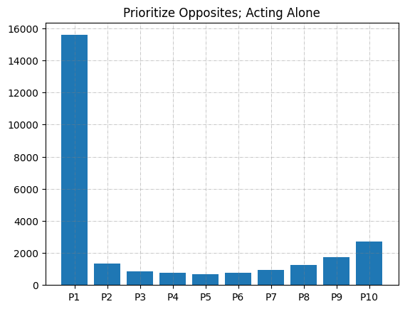

Statistical Analysis of LRC
· 562 words · 3 minutes reading time Statistics math
Motivation
Left-Center-Right (LCR) is a dice game of pure luck. Each player starts with a small pile of chips, and on your turn you roll one die for each chip you hold (up to three). The faces tell you what to do: L passes a chip left, R passes a chip right, C puts a chip in the center pot, and a dot means keep it. The last player with chips wins. Crucially, the standard game offers no decisions — the dice decide everything, so there is no strategy to speak of.
The Wild variant changes this. It adds a WILD face that lets the roller take a chip from any player of their choosing (and rolling three WILDs sweeps the entire center pot). Suddenly there is a sliver of autonomy. The question that motivated this project: given that limited freedom, what is the best use of it? Is there a meaningful strategy, or does the game's inherent randomness wash out any advantage?
To answer that, I built a Monte Carlo simulation of the game and pitted a chosen strategy against players acting under a default rule.
Methodology
The game is modeled directly in NumPy. There are $N = 10$ players seated in a ring, each starting with 5 chips. "You" are player 0; everyone else plays a naive baseline. A roll draws three faces from the die
$$ \text{die} = {,L,\ C,\ R,\ \text{dot},\ \text{dot},\ \text{WILD},}, $$
so each face has probability $1/6$ except the dot, which has probability $2/6$.
A turn resolves the ordinary faces first — L and R move chips to neighbors, C moves a chip to the center — and then handles any WILDs:
die = np.array(['L','C','R','DOT','DOT','WILD'])
def doroll():
return np.array([np.random.choice(die) for i in range(3)])
The baseline rule. When a generic player rolls a WILD, they greedily take from whoever currently has the largest stack:
elif playerID: # any player that isn't "you"
banks[playerID] += WILDcount
banks[np.argmax(banks)] -= WILDcount
My strategy (player 0). Rather than always hitting the global leader, I look across the table — at the player seated opposite me and their immediate neighbors — and take from the wealthiest of that group. If none of them have chips, I fall back to taking from the richest player who is furthest from me:
def strategy(playerID, WILDcount):
# if the players across the table have money, take from the richest of them
if np.count_nonzero(banks[playerID + N//2 - 1 : playerID + N//2 + 1]):
banks[np.argmax(banks[playerID + N//2 - 1 : playerID + N//2 + 1])] -= WILDcount
# otherwise take from the player with money furthest from you
else:
who_has_money = np.nonzero(banks)[0]
take_from = min(who_has_money, key=lambda x: abs(x - N//2))
banks[take_from] -= WILDcount
The intuition is that depleting players across the table — rather than feeding the global-leader dynamic that everyone else plays into — keeps chips circulating away from your immediate neighbors, who can pass chips straight back to you.
A round lets every solvent player take a turn; a game runs until only one player has chips left:
def play_a_game():
while np.count_nonzero(banks) > 1:
play_a_round()
To estimate the win probability of the strategy, the whole game is replayed $n_\text{games} = 10{,}000$ times and player 0's win rate is tallied. With a fair game and no strategy, each of the 10 players would win about $1/N = 10%$ of the time; the question is whether the strategy pushes player 0 meaningfully above that baseline.
Results

Across the Monte Carlo runs, the central comparison is between player 0's
observed win rate and the $10%$ chance expected under pure luck. Because the
game is dominated by randomness, the autonomy granted by the WILD face produces
only a modest shift — the limited freedom the Wild variant allows is exactly
that: limited. The simulation framework, however, makes it straightforward to
swap in alternative strategy() rules and re-run the 10,000-game sweep to
compare their win rates head-to-head.